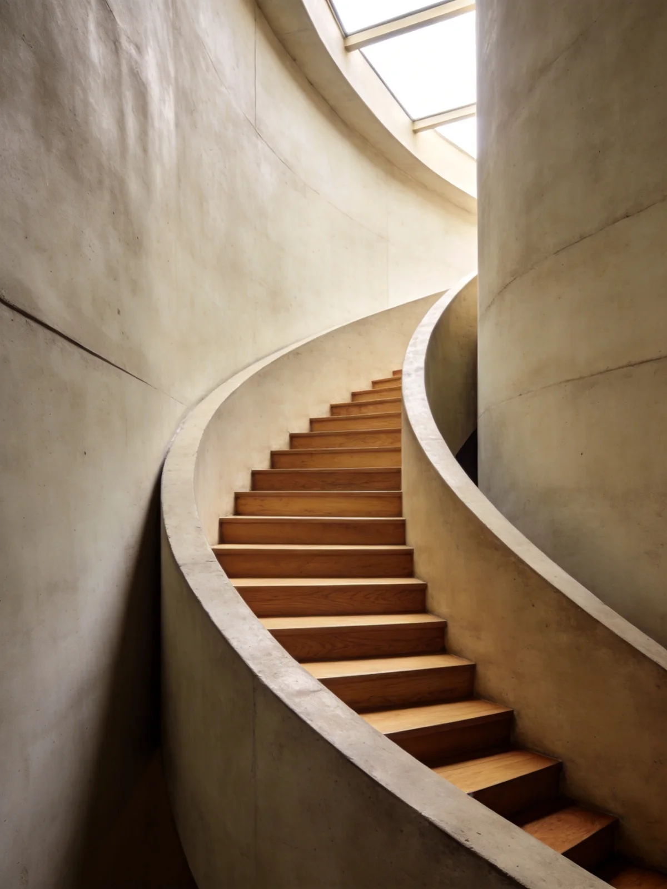
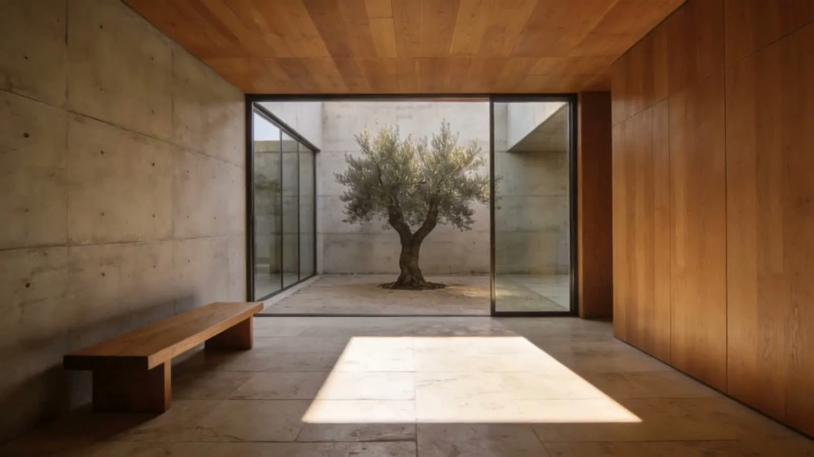

Architecture / Space / Material
Space to
think differently.
A practice of paying attention
Less imposed.
More discovered.
Begin with the light. The way a room meets a garden. The space between one moment and the next. Architecture starts with how a place feels to inhabit.

The courtyard study
Concrete / Oak / Light
Between levels
Movement / ShadowMaterial, made meaningful
A restrained palette leaves room for the things you cannot specify: the changing light, a passing season, the life inside.

A starting point
What are you
making space for?
Begin from the ground
Start with the way you live.
Collect your priorities for light, privacy, shared space and the relationship to outdoors. Save this project direction.
Find what is already there
A different reading of home.
Think about what to keep, what to open up and the daily moments that need more room.
Work & gathering
Design around people.
Explore how people arrive, move, meet and find a quiet corner. Build a brief around the experience before the floor plan.
FORM / OFFICE